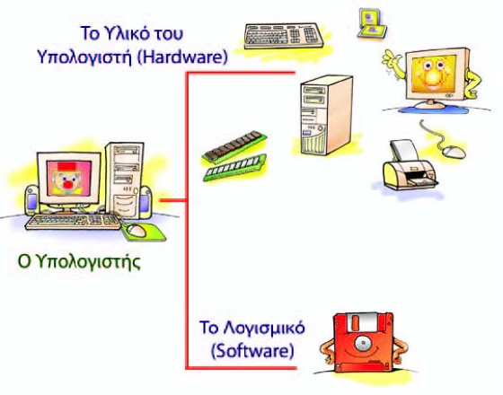

Σκοπός: Κατανόηση των λειτουργιών του Λογισμικού του Υπολογιστή μέσα από την παρουσίαση των βασικών εννοιών και κατηγοριών του
Διδακτική Ώρα: 1 (συμπεριλαμβανομένου του test αξιολόγησης)
Λογισμικό (Software),
Πρόγραμμα (Programme ή Program),
Προγραμματιστής (Programmer),
Λειτουργικό Σύστημα (Operating System),
Λογισμικό Εφαρμογών (Application Software),
Λογισμικό Συστήματος(System Software),
Υπολογιστικό Σύστημα (Computer System)
Ένας υπολογιστής αποτελείται από διάφορα τμήματα, εξαρτήματα και συσκευές συνδεδεμένα μεταξύ τους, τα οποία μπορούμε να δούμε και να αγγίξουμε. Αυτά αποτελούν το Υλικό (Hardware) του υπολογιστή. Όταν ανοίγουμε έναν υπολογιστή, ένα σύνολο από διάφορα τμήματα του Υλικού συνεργάζονται μεταξύ τους, ώστε να μπορέσει να λειτουργήσει. Παρατηρούμε τα φωτάκια της Κεντρικής Μονάδας να αναβοσβήνουν, ακούμε το σκληρό δίσκο να κάνει θόρυβο, η οθόνη αρχίζει να ανταποκρίνεται και μας εμφανίζει την επιφάνεια εργασίας, ενώ το ποντίκι και το πληκτρολόγιο μετά από λίγο είναι έτοιμα να λειτουργήσουν.
Στο Κεφάλαιο αυτό θα έχουμε την ευκαιρία να γνωρίσουμε περισσότερα για τη λειτουργία του υπολογιστή και να απαντήσουμε στα παραπάνω ερωτήματα.
Για να μπορεί το Υλικό Μέρος του υπολογιστή να εκτελεί και την πιο απλή επεξεργασία δεδομένων, χρειάζεται ένα σύνολο οδηγιών. Οι οδηγίες αυτές καθοδηγούν βήμα προς βήμα τον υπολογιστή και συντονίζουν τα διάφορα εξαρτήματα του, ώστε να εκτελεστεί η εργασία που θέλουμε. Το σύνολο αυτών των οδηγιών - εντολών ονομάζεται πρόγραμμα. Η δυνατότητα του υπολογιστή να εκτελεί τις εντολές των προγραμμάτων και να υποστηρίζει πολλές και διαφορετικές εργασίες βοήθησε στη μεγάλη διάδοση του.
Μπορούμε να φτιάχνουμε προγράμματα στον υπολογιστή, για να κάνουμε υπολογισμούς, να πραγματοποιούμε εμπορικές συναλλαγές, να ελέγχουμε την εναέρια κυκλοφορία σε ένα αεροδρόμιο, να στέλνουμε ανθρώπους στο διάστημα ή να παίζουμε παιχνίδια
Η ιδέα της προγραμματιζόμενης μηχανής δεν είναι καινούργια. Υπάρχουν διάφορες συσκευές καθημερινής χρήσης, που χρειάζονται ένα σύνολο εντολών, για να εκτελέσουν μία εργασία. Το πλυντήριο, το DVD, το κινητό τηλέφωνο, οι παιχνιδομηχανές (videogames), είναι μερικές από αυτές. Κάποιες συσκευές απαιτούν απλές εντολές για να λειτουργήσουν (πλυντήριο, DVD), ενώ κάποιες άλλες πιο σύνθετες εντολές (κινητό τηλέφωνο, παιχνιδομηχανή). Για παράδειγμα, για να γράψουμε μια εκπομπή από την τηλεόραση την ώρα που λείπουμε θα πρέπει να προγραμματίσουμε τη συσκευή του DVD εγγραφής δίνοντας εντολές, όπως: την ώρα που θα ξεκινήσει την εγγραφή, το τηλεοπτικό κανάλι από το οποίο θα γράψει την εκπομπή, την ώρα που θα τερματίσει την εγγραφή κ.λπ.
Τα παιχνίδια που παίζουμε στις παιχνιδομηχανές είναι πολύ πιο σύνθετα προγράμματα. Αποτελούνται από ένα μεγάλο σύνολο εντολών, που ενεργοποιούνται ανάλογα με τις κινήσεις που κάνουμε με τα χειριστήρια. Τα προγράμματα των παιχνιδομηχανών τα έχουν γράψει από πριν ειδικοί-προγραμματιστές- συνδυάζοντας κατάλληλα διάφορες εντολές και στη συνέχεια τα έχουν αποθηκεύσει σε ένα DVD ή CD. Όταν προμηθευόμαστε ένα παιχνίδι σε CD και το εισάγουμε στην παιχνιδομηχανή, ουσιαστικά εισάγουμε ένα σύνολο εντολών στη συσκευή.
Ο υπολογιστής είναι μια ακόμη πιο σύνθετη μηχανή από αυτές που περιγράψαμε. Εκτός από παιχνίδια μπορεί να εκτελεί και πολλές άλλες χρήσιμες εργασίες και να υποστηρίζει την επεξεργασία διαφορετικών δεδομένων. Ανάλογα με την εργασία που θέλουμε να κάνουμε με τον υπολογιστή, πρέπει να επιλέξουμε και το κατάλληλο πρόγραμμα. Αν διερευνήσουμε έναν υπολογιστή, θα βρούμε ένα πλήθος προγραμμάτων που μας βοηθούν να γράφουμε κείμενα, να ζωγραφίζουμε, να επεξεργαζόμαστε εικόνες, να κάνουμε υπολογισμούς, να επικοινωνούμε με άλλους υπολογιστές. Κάθε υπολογιστής αποτελείται από δύο μέρη που συνεργάζονται μεταξύ τους: το Υλικό και το Λογισμικό. Το σύνολο των προγραμμάτων που χρησιμοποιούνται από τους υπολογιστές ονομάζεται Λογισμικό (Software). Σε αντίθεση με το Υλικό του υπολογιστή, το Λογισμικό είναι άυλο, δηλαδή δεν μπορούμε το αγγίξουμε.
Στην εικόνα πιο πάνω παρομοιάζεται το ανθρώπινο σώμα με το Υλικό του υπολογιστή και αυτά που έμαθε να κάνει, οι σκέψεις του, με το Λογισμικό του υπολογιστή. Έτσι, όπως όταν ξυπνήσουμε το πρωί ακολουθούμε μια διαδικασία που μάθαμε (πλύσιμο, βούρτσισμα δοντιών, ντύσιμο, πρόγευμα, κ.λπ.), η οποία συντονίζει τα διάφορα μέρη του σώματός μας για να ακολουθηθεί η σωστή σειρά, έτσι και ο υπολογιστής ακολουθεί τις εντολές από ένα πρόγραμμα (Λογισμικό), το οποίο συντονίζει τα διάφορα μέρη του (Υλικό) για να γίνει μια εργασία με τον σωστό τρόπο. Με τη διαφορά, βέβαια, ότι ο άνθρωπος αποφασίζει από μόνος του ποια διαδικασία χρειάζεται κάθε φορά, ενώ στην περίπτωση του υπολογιστή ο χρήστης πρέπει να αποφασίσει ποιο πρόγραμμα πρέπει να εκτελεστεί.
Τα προγράμματα του υπολογιστή μοιάζουν με αυτά που χρησιμοποιούν οι παιχνιδομηχανές. Βρίσκονται αποθηκευμένα σε διάφορα αποθηκευτικά μέσα, όπως στο σκληρό δίσκο, σε DVD-ROM ή CD-ROM. Αποτελούνται από ένα σύνολο εντολών που έχουν γράψει προγραμματιστές. Για να γράψει κανείς ένα πρόγραμμα για έναν υπολογιστή, πρέπει να γνωρίζει κάποια γλώσσα προγραμματισμού. Οι γλώσσες προγραμματισμού μοιάζουν με τις γλώσσες που χρησιμοποιούν οι άνθρωποι, για να επικοινωνούν μεταξύ τους. Είναι όμως με τέτοιο τρόπο φτιαγμένες, ώστε να τις καταλαβαίνουν και οι άνθρωποι και οι υπολογιστές.
Ανοίξτε την αριθμομηχανή που βρίσκεται στους υπολογιστές του εργαστηρίου σας. Προσπαθήστε να προσθέσετε δύο αριθμούς της επιλογής σας με τη βοήθεια του ποντικιού. Επαληθεύστε το αποτέλεσμα.
Όπως φαίνεται στην Εικόνα 2.3, όταν «φορτώνουμε» ένα πρόγραμμα, μεταφέρουμε σταδιακά από το σκληρό δίσκο ή από ένα άλλο αποθηκευτικό μέσο (CD-ROM, δισκέτα) ένα σύνολο εντολών στη μνήμη του υπολογιστή. Στη συνέχεια μία ομάδα από αυτές τις εντολές εκτελείται
ή «τρέχει», ανάλογα με τις ενέργειες μας.
Για παράδειγμα, «πατώντας» το εικονικό κουμπί της πρόσθεσης στην αριθμομηχανή ενεργοποιούμε τις κατάλληλες εντολές, ώστε ο υπολογιστής να ακολουθήσει τις οδηγίες και:
1. να εκτελέσει την πρόσθεση των αριθμών που αρχικά επιλέξαμε
2. να εμφανίσει το αποτέλεσμα της πρόσθεσης στην οθόνη
Πολλές φορές συγχέουμε τις έννοιες «δεδομένα» και «πρόγραμμα», επειδή και τα δύο είναι άυλα και αποθηκεύονται στη μνήμη και στα αποθηκευτικά μέσα του υπολογιστή.
Οι έννοιες αυτές έχουν τελείως διαφορετική σημασία. Τα δεδομένα τα «επεξεργαζόμαστε», ενώ το πρόγραμμα «εκτελείται». Στο παράδειγμα μας τα δεδομένα είναι οι δύο αριθμοί που επιλέξαμε να προστεθούν, ενώ οι εντολές του προγράμματος της αριθμομηχανής δίνουν οδηγίες στον υπολογιστή για το πώς να προσθέσει τα δεδομένα.
Το Λογισμικό που βρίσκουμε σε έναν υπολογιστή μπορούμε να το χωρίσουμε σε δύο μεγάλες κατηγορίες: στο Λογισμικό Εφαρμογών και στο Λογισμικό Συστήματος.
Λογισμικό Εφαρμογών: Στην κατηγορία του Λογισμικού Εφαρμογών περιλαμβάνεται μια μεγάλη ποικιλία διαφορετικών προγραμμάτων, κατασκευασμένων με τέτοιο τρόπο, ώστε να εκτελούν συγκεκριμένες εργασίες σύμφωνα με τις απαιτήσεις και τις ανάγκες μας. Ανάλογα με τη δραστηριότητα που αναπτύσσουμε επιλέγουμε και το αντίστοιχο πρόγραμμα.
Μερικά παραδείγματα Λογισμικού Εφαρμογών είναι:
Τα προγράμματα ζωγραφικής και δημιουργίας σχεδίων. Με ειδικά εργαλεία μπορούμε να φτιάξουμε και να εκτυπώσουμε τις ζωγραφιές μας με τη βοήθεια του υπολογιστή.
Τα προγράμματα επεξεργασίας φωτογραφίας και εικόνων. Με τη βοήθεια μιας εργαλειοθήκης, που μας προσφέρουν τα προγράμματα αυτά, μπορούμε να επεξεργαστούμε τις φωτογραφίες που εισάγουμε στον υπολογιστή με τον σαρωτή ή με μια ψηφιακή φωτογραφική μηχανή. Επιλέγοντας τα κατάλληλα εργαλεία από την εργαλειοθήκη του προγράμματος βελτιώνουμε τα χρώματα των φωτογραφιών μας, προσθέτουμε κείμενα ή αφαιρούμε αντικείμενα δημιουργώντας εντυπωσιακές εικόνες.
Τα προγράμματα Επεξεργασίας Κειμένου. Μπορούμε να γράψουμε και να διαμορφώσουμε ένα κείμενο με ποικίλους τρόπους, ανεξάρτητα από το αν είμαστε μαθητές, καθηγητές, επιστήμονες ή γραμματείς μιας επιχείρησης
Τα προγράμματα παρουσίασης. Μας δίνουν τη δυνατότητα να συνδυάζουμε κείμενα, ήχους, εικόνες, βίντεο και να παρουσιάζουμε με τον υπολογιστή τα μαθήματα της ημέρας ή τις εργασίες μας. Αν μάλιστα χρησιμοποιήσουμε ως συσκευή εξόδου ένα βιντεοπροβολέα, τα αποτελέσματα είναι εντυπωσιακά.
Τα εκπαιδευτικά προγράμματα και οι ηλεκτρονικές εγκυκλοπαίδειες.
Τα προγράμματα διαχείρισης προσωπικών πληροφοριών, όπως: ημερολόγιο, τηλεφωνικοί κατάλογοι, λίστα υπενθύμισης εργασιών.
Τα παιχνίδια.
Τα προγράμματα μπορούμε να τα προμηθευτούμε είτε σε συσκευασία πακέτου που περιέχει
το λογισμικό σε CD-ROM μαζί με εγχειρίδια χρήσης είτε από το Διαδίκτυο (Internet). Συνήθως
απαιτείται να εγκαταστήσουμε το λογισμικό στο σκληρό μας δίσκο, ώστε να μπορούμε να το «ανοίγουμε» και να το χρησιμοποιούμε. Ανά τακτά χρονικά διαστήματα, μπορούμε να ανανεώνουμε το Λογισμικό του υπολογιστή μας με νέες εκδόσεις που διαθέτουν περισσότερα χαρακτηριστικά. Πριν όμως προμηθευτούμε την καινούργια έκδοση, πρέπει να πληροφορηθούμε για τα νέα χαρακτηριστικά που προστίθενται, ώστε να κρίνουμε, αν πραγματικά τα χρειαζόμαστε και αν ανταποκρίνονται στις προδιαγραφές του υπολογιστικού μας συστήματος.
Λογισμικό Συστήματος: Στην κατηγορία αυτή περιλαμβάνονται όλα τα προγράμματα που χρησιμοποιούνται για τον έλεγχο της λειτουργίας του υπολογιστή και τη δημιουργία και εκτέλεση των προγραμμάτων εφαρμογών. Το βασικότερο Λογισμικό της κατηγορίας αυτής είναι το Λειτουργικό Σύστημα (Operating System).
Το Λειτουργικό Σύστημα αποτελείται από μία ομάδα προγραμμάτων τα οποία είναι απαραίτητα για τη λειτουργία του υπολογιστή.
Το Λειτουργικό Σύστημα δίνει τη δυνατότητα στον υπολογιστή να υπακούει στις οδηγίες που του δίνουμε χρησιμοποιώντας το πληκτρολόγιο, το ποντίκι ή τις άλλες περιφερειακές συσκευές εισόδου. Μας επιτρέπει να βλέπουμε το αποτέλεσμα των ενεργειών μας στην οθόνη του υπολογιστή – ή στις άλλες περιφερειακές μονάδες εξόδου – και να αποθηκεύουμε τη δουλειά μας. Επίσης συντονίζει κατάλληλα τη λειτουργία των διαφόρων εξαρτημάτων του υπολογιστή, ώστε να επικοινωνούν αρμονικά μεταξύ τους και να εξυπηρετούν την εκτέλεση του λογισμικού εφαρμογών.
Το Λειτουργικό Σύστημα είναι υπεύθυνο για:
● την αρμονική λειτουργία του υπολογιστή
● τη διαχείριση του υλικού του υπολογιστή
● την επικοινωνία μας με τον υπολογιστή μέσω των περιφερειακών συσκευών
● την εκτέλεση άλλων προγραμμάτων
● την αποθήκευση των αρχείων μας στις μονάδες αποθήκευσης
Για να καταλάβουμε καλύτερα το ρόλο του Λειτουργικού Συστήματος, θα μπορούσαμε να παρουσιάσουμε τον υπολογιστή με μία ορχήστρα (Εικόνα 2.4). Αν υποθέσουμε ότι οι μουσικοί μαζί με τα μουσικά τους όργανα αντιπροσωπεύουν το υλικό μέρος και οι παρτιτούρες με τις μουσικές νότες το Λογισμικό Εφαρμογών, τότε το Λειτουργικό Σύστημα είναι ο «μαέστρος της ορχήστρας». Όπως ο μαέστρος διευθύνει τους μουσικούς της ορχήστρας του, για να παίξουν ως σύνολο τις παρτιτούρες τους, έτσι και το Λειτουργικό Σύστημα συντονίζει τη συνεργασία Υλικού-Προγραμμάτων, για να λειτουργούν μαζί αρμονικά. Χωρίς «μαέστρο» ο υπολογιστής δε θα μπορούσε να εκτελέσει τα προγράμματα που θέλουμε και δε θα παίρναμε αποτελέσματα.
Αφού το Λειτουργικό Σύστημα ελέγχει και συντονίζει το υλικό, τα υπόλοιπα προγράμματα (εφαρμογές) όταν χρειάζεται να χρησιμοποιήσουν κάποια συσκευή (π.χ. έναν εκτυπωτή), απευθύνονται στο Λειτουργικό Σύστημα που αναλαμβάνει την επικοινωνία με τη συσκευή εκ μέρους τους (Εικόνα 2.5). Αυτό απλουστεύει τον τρόπο που λειτουργούν οι εφαρμογές και τις κάνει πιο εύχρηστες. Παράλληλα, όμως, το Λειτουργικό Σύστημα θα πρέπει να μπορεί να ελέγχει πολλών ειδών συσκευές (π.χ. πολλούς διαφορετικούς τύπους εκτυπωτών, οθονών, πληκτρολογίων κ.λπ.). Γι’ αυτό ένα Λειτουργικό Σύστημα αποτελείται συνήθως από μια μεγάλη συλλογή λογισμικού (προγραμμάτων).
Υπάρχουν πολλά και διαφορετικά Λειτουργικά Συστήματα. Μερικά από τα πιο διαδεδομένα είναι τα: MS-Windows, Linux, MacOS, Unix, MS-DOS κ.ά. Πρέπει να θυμόμαστε ότι ένα Λειτουργικό Σύστημα δεν είναι κατάλληλο για όλα τα είδη των υπολογιστών. Αντίστοιχα, ένα πρόγραμμα κατασκευάζεται, για να λειτουργήσει σε συγκεκριμένο Λειτουργικό Σύστημα. Για το λόγο αυτό μερικοί κατασκευαστές προγραμμάτων δημιουργούν, για παράδειγμα, διαφορετική έκδοση ενός προγράμματος για τα Windows, διαφορετική για το MacOS και διαφορετική για το Linux.
Πολλές φορές στα βιβλία για υπολογιστές ο υπολογιστής αναφέρεται και ως «Σύστημα Ηλεκτρονικού Υπολογιστή».
Όπως ήδη έχουμε μάθει, ο υπολογιστής είναι μια σύνθετη μηχανή, που αποτελείται από το Υλικό και το Λογισμικό. Τα πολυάριθμα εξαρτήματα του Υλικού συνδέονται κατάλληλα μεταξύ τους και συνεργάζονται συμφωνά με τις εντολές των πολλών προγραμμάτων του λογισμικού.
Όλα τα μέρη του υπολογιστή είναι έτσι οργανωμένα, ώστε να λειτουργούν αρμονικά μεταξύ τους και να παράγουν τα επιθυμητά αποτελέσματα. Κάθε στοιχείο έχει μία συγκεκριμένη επιμέρους λειτουργία, όπως:
● το πληκτρολόγιο, για να εισάγουμε δεδομένα,
● ο εκτυπωτής, για να τυπώνουμε πληροφορίες,
● το Λειτουργικό Σύστημα, για να συντονίζει τη λειτουργία του υπολογιστή.
Όλα, τα στοιχεία λειτουργούν μαζί ως σύνολο και έχουν ως κοινό σκοπό να επεξεργάζονται τα δεδομένα που δέχεται ο υπολογιστής, ώστε να μας παρέχουν τα αντίστοιχα αποτελέσματα. Πρέπει να τονίσουμε ότι τα στοιχεία του υπολογιστή δεν μπορούν να λειτουργήσουν αυτόνομα.
Για να μπορεί ο υπολογιστής να εκτελεί υπολογισμούς, πρέπει να τροφοδοτείται με δεδομένα και εντολές που του δίνουμε εμείς. Ανάλογα με αυτά τα δεδομένα και τις εντολές παράγει αποτελέσματα, τα οποία μας παρέχει με τη βοήθεια των συσκευών εξόδου. Αν όμως τον τροφοδοτήσουμε με λανθασμένα δεδομένα, θα παραγάγει λανθασμένα αποτελέσματα. Όμοια, πρέπει να είμαστε πολύ προσεκτικοί για το ποιες είναι οι κατάλληλες οδηγίες που θα του δώσουμε, για να επεξεργαστεί τα δεδομένα, ώστε να μας δώσει τα αποτελέσματα που επιθυμούμε.